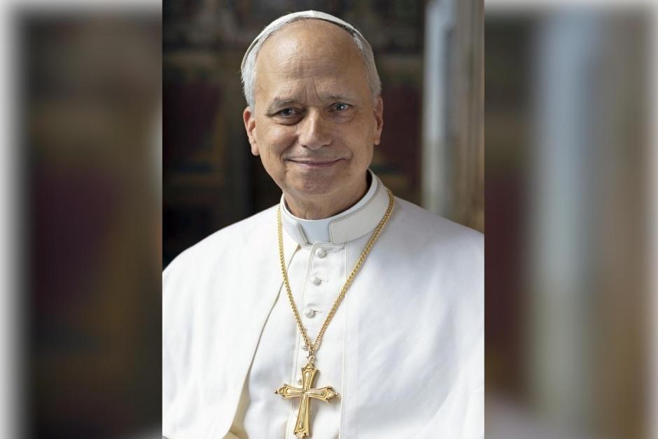

León XIV es el Papa de la Iglesia Católica. Fue elegido el 8 de mayo de 2025.
Visitó Uruguay del 6 al 8 de noviembre de 2026.
El viernes 6 llegó a Montevideo y se reunió con autoridades.
El sábado 7 visitó Paysandú. También tuvo encuentros en Montevideo.
El domingo 8 viajó a Florida para realizar una celebración religiosa y después partió hacia Argentina.
Fue importante porque representa un renacer para los jóvenes católicos.
La reciente visita del Papa León XIV a Uruguay fue un momento histórico súper importante. Para nuestro país, que es muy laico (lo que significa que las leyes y el Estado están separados de la religión), recibir al líder de la Iglesia Católica movilizó a todo el mundo, no solo a los que van a misa.
www.vatican.va
Volver al inicio